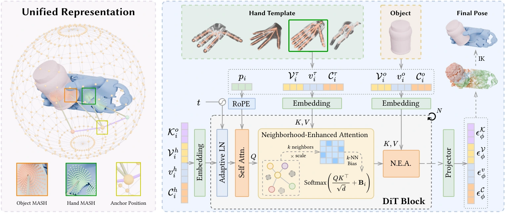
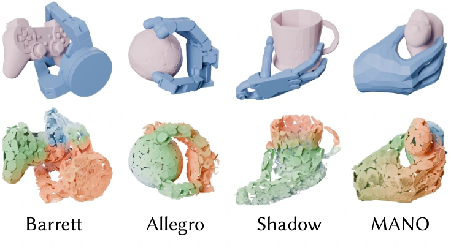
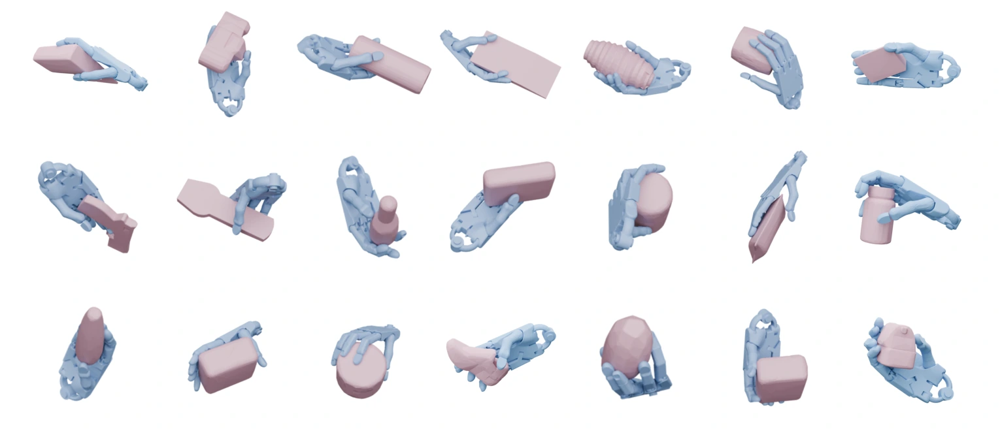
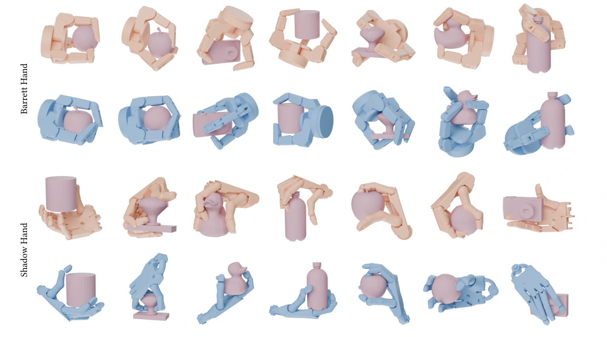
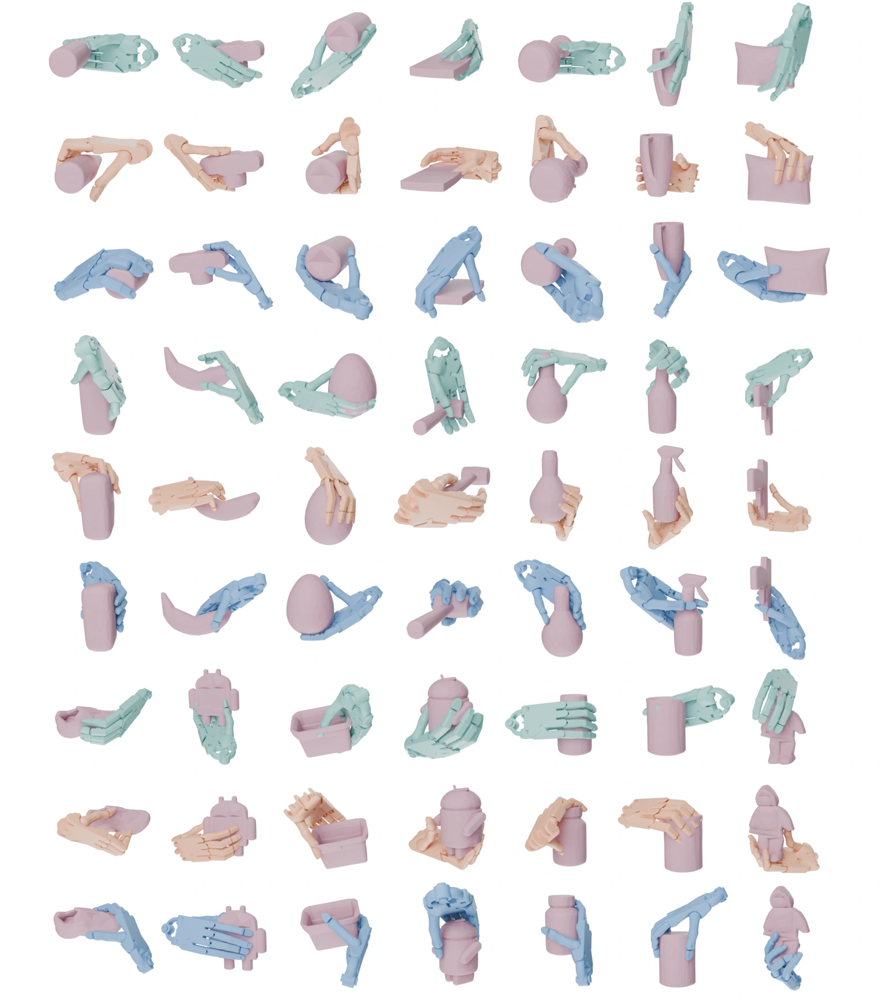

Method

Align & encode
Align robotic-hand patches to a MANO reference ordering using keypoint-distance signatures. Shared sphere-fixed anchors encode local surface patches with spherical harmonics; coarse-to-fine fitting stabilizes reconstruction.
Jointly denoise
Generate hand geometry and contact tokens conditioned on the object and hand template. Neighborhood-enhanced attention uses patch adjacency, while physical guidance encourages stable contact and reduces penetration.
Recover the pose
Reconstruct patch-wise point sets, initialize global hand alignment, and solve inverse kinematics under the shared patch correspondence to recover the final articulated grasp.

Each anchor stores a compact description of its local interaction. The continuous patch representation supports surface sampling beyond a fixed point-cloud resolution, while a consistent semantic ordering connects corresponding regions across hands.
Results






InterMASH supports single-hand generation, cross-embodiment robotic grasp synthesis, and human-to-robot prior transfer. The following results are reported in the paper, with each benchmark retaining its own evaluation protocol.
Single-hand grasp generation
DexGraspNet · ShadowHand · Paper Table 1
| Method | Suc.6 (%) ↑ | Suc.1 (%) ↑ | Pen. (mm) ↓ | Div. ↑ |
|---|---|---|---|---|
| UniDexGrasp (2023) | 33.9 | 70.1 | 31.9 | 0.14 |
| GraspTTA (2021) | 18.6 | 67.8 | 24.5 | 0.13 |
| SceneDiffuser (2023) | 26.6 | 66.9 | 31.0 | 0.15 |
| UGG (2024) | 46.9 | 79.0 | 25.2 | 0.14 |
| DexGrasp Anything (2025) | 53.6 | 90.4 | 21.5 | 0.22 |
| D(R, O) (2024) | 46.9 | 89.7 | 17.5 | 0.20 |
| InterMASH Ours | 53.5 | 91.9 | 16.2 | 0.14 |
Suc.6 / Suc.1: success under all six / at least one disturbance direction. Pen.: maximum penetration depth. Div.: mean standard deviation of local pose parameters. Bold marks the best value in each column.
InterMASH achieves the best Suc.1 and lowest penetration among the compared methods. Its stricter six-direction success and diversity remain below the strongest baseline, reflecting a quality–diversity trade-off.
Cross-embodiment robotic grasp synthesis
Filtered CMapDataset · Barrett & ShadowHand · Paper Table 2
| Method | Success rate (%) ↑ | Diversity ↑ | ||
|---|---|---|---|---|
| Barrett | ShadowHand | Barrett | ShadowHand | |
| DFC | 86.30 | 58.80 | 0.532 | 0.435 |
| GenDexGrasp | 67.00 | 54.20 | 0.488 | 0.318 |
| D(R, O) | 87.30 | 83.00 | 0.513 | 0.441 |
| InterMASH Shadow only | — | 57.62 | — | 0.416 |
| InterMASH Shadow + Barrett | 90.30 | 64.15 | 0.480 | 0.396 |
Evaluated in Isaac Gym under the D(R, O) protocol. Diversity is the standard deviation of joint values among successful grasps. These success rates use a different protocol from the DexGraspNet table above.
Mixed-hand training improves ShadowHand success from 57.62% to 64.15% and yields the highest Barrett success among these methods. D(R, O) remains stronger on ShadowHand in this smaller mixed-hand dataset.
Human grasp priors benefit robotic hands
DexGRAB evaluation · Human-to-robot transfer · Paper Table 3
Starting from a model trained on ShadowHand DexGRAB samples, we fine-tune on a 1:1 mixture of DexGRAB and MANO-based human GRAB samples. Both settings are evaluated on the same DexGRAB test split.
| Training setting | Suc.6 (%) ↑ | Suc.1 (%) ↑ | Pen. (mm) ↓ | Div. ↑ |
|---|---|---|---|---|
| DexGRAB only | 25.8 | 64.2 | 14.9 | 0.450 |
| DexGRAB + GRAB fine-tuning | 29.0 | 65.9 | 18.6 | 0.500 |
Human data improves success and diversity, while penetration increases from 14.9 to 18.6 mm. The paper links this trade-off to higher average penetration in the human source data.
BibTeX
@inproceedings{yang2026intermash,
title = {{InterMASH}: A Unified Geometric Representation for Grasp Synthesis},
author = {Yang, Xuanze and Liu, Yumeng and Xin, Haiyang and Li, Changhao
and Shen, Haowei and Xu, Kai and Liu, Ligang and Hu, Ruizhen},
booktitle = {SIGGRAPH Asia 2026 Conference Papers},
series = {SA Conference Papers '26},
year = {2026},
publisher = {Association for Computing Machinery},
address = {New York, NY, USA},
location = {Kuala Lumpur, Malaysia},
numpages = {11},
doi = {10.1145/3829340.3842336}
}